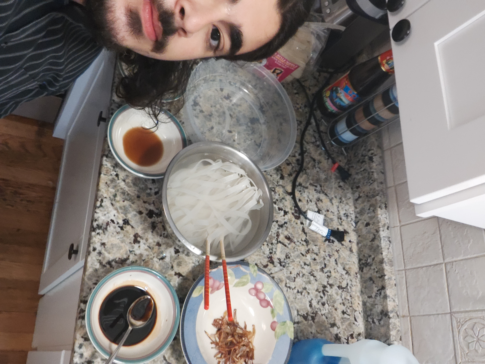
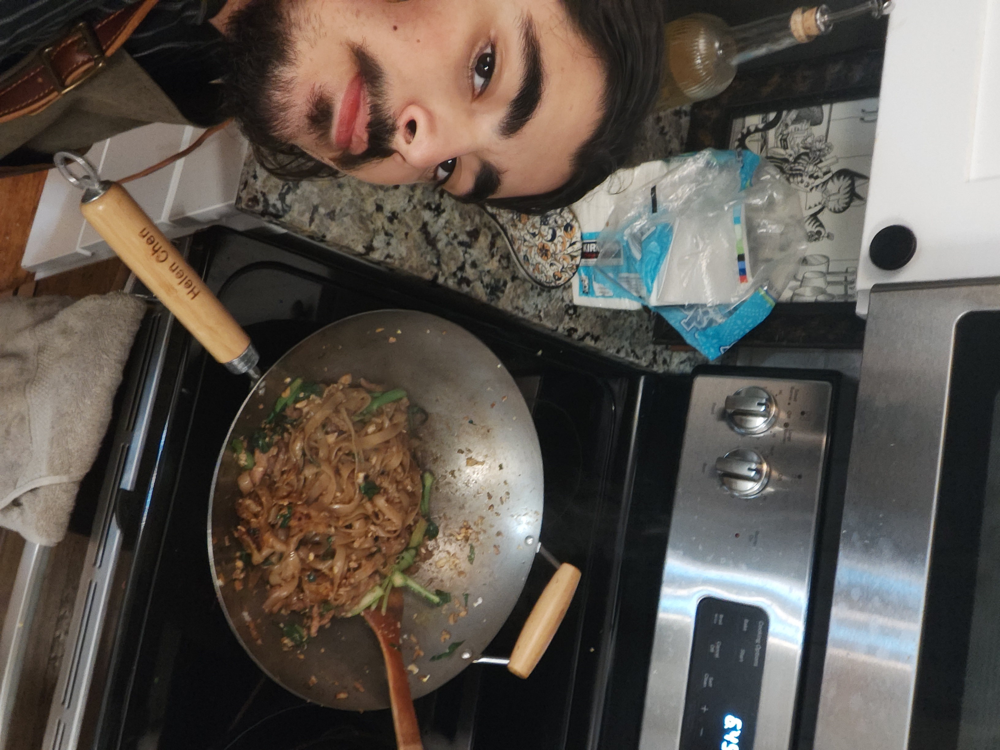

Delving Into the Smoke - A Deep Dive Into Pad Si Ew
by santiago uribe guiza
Pad Si Ew has always been one of my favorite Thai noodle dishes. I remember when my friends first introduced them to me--we were at a No Thai in Ann Arbor and they mentioned that they had good Drunken Noodles. With such an intriguing name, I knew I had to try them. Although the No Thai rendition strays away from Chef Ryan's recipe and what is commonly eaten in Thailand, the same core elements were there: smoky and umami noodles paired with a savory garlicy sauce and some protein. Since then, I have had Pad Si Ew from other Thai restaurants and it has solidified itself today as one of my favorite Thai noodle dishes. Though seemingly normal today, the general presence of Thai food in America is likely derivative of the globalization efforts by former Thai dictator Plaek Phibunsongkhram. His World War II era campaign of Thai cultural solidification within Thailand and the rest of the world caused the popularization of Thai food within America (Mayyasi). Had this not happened, Professor Brown's sharing of the Chef Ryan's recipe in lecture would have likely been the first time I would have heard of Pad Si Ew (Brown Lecture 15 Slide 61).
Pad Si Ew is an interesting combination of both old world and new world ingredients which have appeared to Thailand at different times due to the Columbian Exchange. In the recipe from Chef Ryan, the peanut oil and Thai chili peppers are both likely decendants of the Columbian Exchange. In fact, the Thai chili peppers themselves are likely descendants of the Mexican chili peppers that were eaten by the Aztecs in the pre-colonial period (Brown The Portuguese and Montezuma's Fiery Gift).

Similar to Pad Thai, Pad Si Ew makes use of flat rice noodles which are descendants of those made in China (Brown Lecture 15 Slide 40). The similarity between Pad Si Ew and Chinese noodle dishes like Chaozhou Guotiao bear family resemblance; their common ancestry is seen in the use of rice noodles (Brown Lecture 10 Slide 10).The first step of the recipe starts with soaking these rice noodles for 30 minutes. When I was at the supermarket shopping for rice noodles, I noticed that there are two kinds available: fresh refrigerated rice noodles and dehydrated shelf stable rice noodles. Although the fresh rice noodles might have had a better taste and texture, I ultimately decided to buy the dehydrated ones simply because they would last me longer and also because I didn't think I'd be able to get through a massive 5 pound bag of fresh rice noodles fast enough. The dehydration of the rice noodles is a great example of how cultural adaptation can be used to preserve and elongate the shelf life of these versatile noodles (Brown Lecture 3 Slide 45). Dehydration is often one of the forms of cultural adaptation that preserves food for the longest. In Kazakh culture for example, fermented milk is sun-dried into Qurt balls that can later be boiled to create stock (Armitage). Similar to Qurt, the dehydrated rice noodles can technically last for an indefinite time, as long as it is kept dry. For both foods, when ready to use they are boiled and reverted to a similar state that they were in before dehydration.
After all the ingredients are rehydrated, sliced and mixed, we move on from the prep stage to the actual cooking of the dish. One of the unique and crucial parts of this dish is its smokiness. As it was mentioned in the recipe, the signature smokiness of the dish comes from slightly charring the rice noodles in a molten sugar and oil mixture. The process of combining smoky oil, carmelized sugar and high temperatures is a common technique throughout southeast and east Asia known as "the breath of the wok". The preference for complex and layered flavors in dishes from this region points to the similarities in cultural matrices among these countries. For those with different cultural matrices, they might see this charring/smoking technique as undesirable.
Pad Si Ew has cemented itself as part of the American diet (and mine) in a very similar fashion to that of Japanese ramen: both are noodle dishes strongly influenced by Chinese ingredients and modified by European colonialism through the Columbian Exchange (Lu). Thanks to globalization efforts from Thailand and layered influence from the likes of China, Europe, Latin America, and Southeast Asia, I can enjoy this dish easily from my local No Thai around the corner (Brown Lecture 14 Slide 80).


Bibliography
Armitage, Susie. “Make the Ancient Road Snack of Central Asian Nomads.” Atlas Obscura, 8 Mar. 2021, www.atlasobscura.com/articles/what-is-qurt.
Brown, Miranda. “The Portuguese and Montezuma’s Fiery Gift, with a Kimchi Recipe (as 258).” Chinese Food History, 23 Feb. 2021, www.chinesefoodhistory.org/post/the-portuguese-and-montezuma-s-fiery-gift-with-a-kimchi-recipe.
Lu, Hunter. “The Illegal Ramen Vendors of Postwar Tokyo.” Atlas Obscura, 24 Aug. 2018, www.atlasobscura.com/articles/how-did-ramen-become-popular.
Mayyasi, Alex. “The Oddly Autocratic Roots of Pad Thai.” Atlas Obscura, 7 Nov. 2019, www.atlasobscura.com/articles/who-invented-pad-thai.
Brown Lecture 3 The Tale of Two Curds
Brown Lecture 10 Kimchi
Brown Lecture 14 Pho and Banh Xeo
Brown Lecture 15 Pad Thai